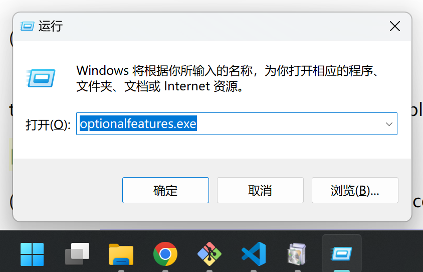
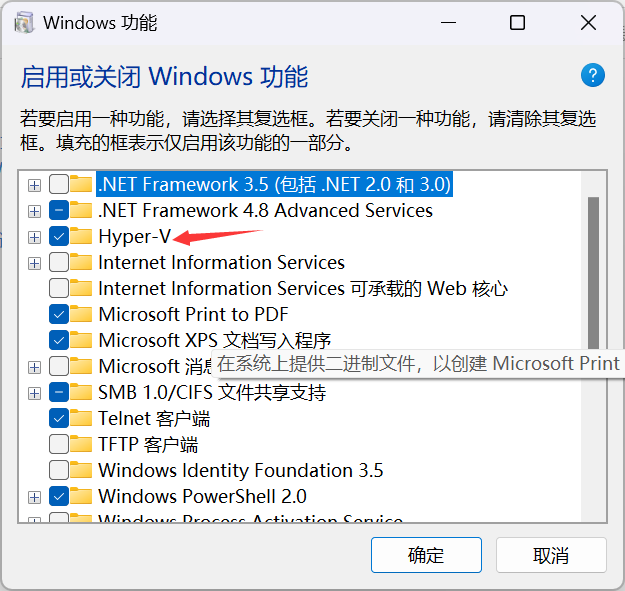
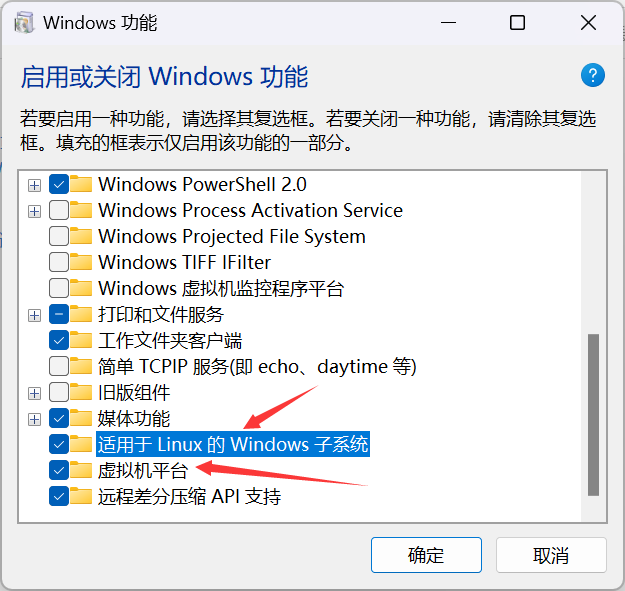
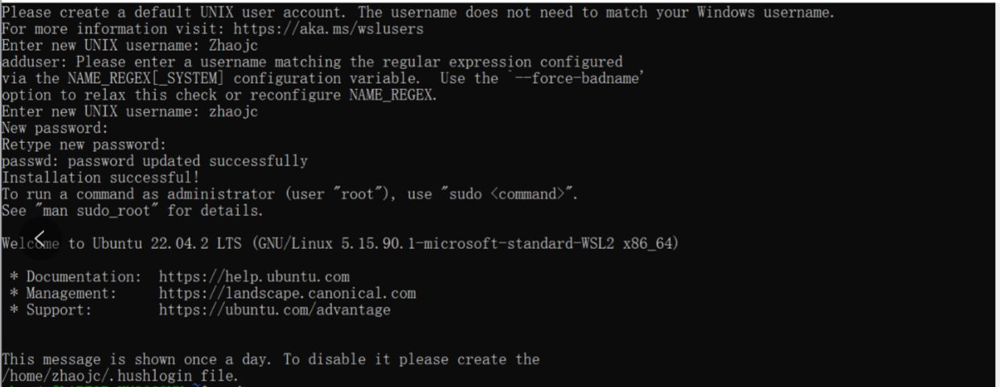
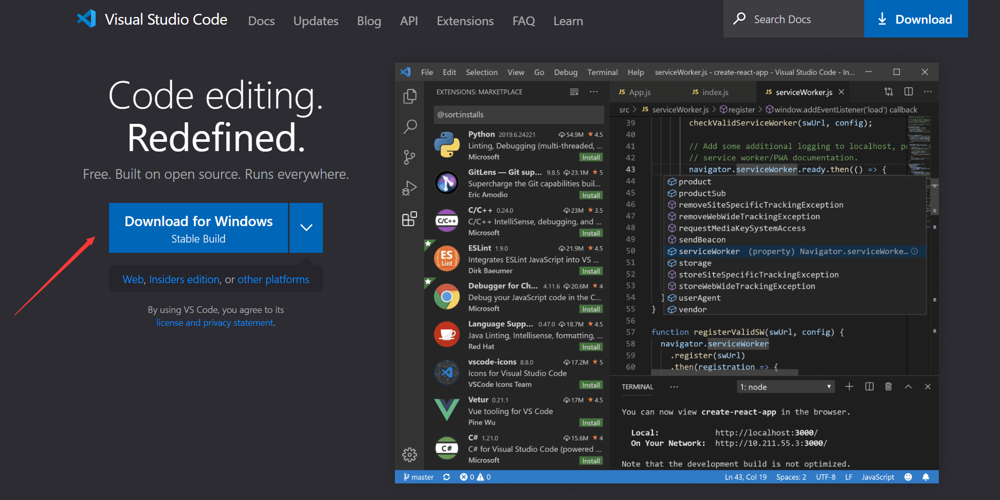

In this lab, you will install and set up the software used in this course, including virtual machines, operating systems, compilers, debuggers, IDEs, among others. As some labs (e.g., network sniffing) is dangerous and may bring serious consequences, so you should finish these labs in virtual machines, but NOT in your local machines.
After finishing the assignment, you should zip your code files with the file name student ID-lab-<n>.zip (e.g., SA19225789-lab-0.zip) and submit it to the Postgraduate Information Platform.
You do NOT need to submit anything for this lab.
All labs in this course must be finished using a Linux system, and we will be using Ubuntu for our lab. In this part, you should install Linux first, if you have not.
Please follow these steps to set up the Windows Subsystem for Linux (WSL):
1. Create a new text file run.bat (Windows script file) at any location and paste the following content into it:
pushd "%~dp0"
dir /b %SystemRoot%\servicing\Packages\*Hyper-V*.mum > hyper-v.txt
for /f %%i in ('findstr /i . hyper-v.txt 2^>nul') do dism /online /norestart
/add-package:"%SystemRoot%\servicing\Packages\%%i"
del hyper-v.txt
Dism /online /enable-feature /featurename:Microsoft-Hyper-V -All /LimitAccess /ALL
pause
Save the file then right-click it, and run it with the administrator privilege. Finally, reboot your computer.
2. After your computer rebooted, open Windows Features
(Press Win+R and enter optionalfeatures.exe):

Enable the following three options: Hyper-V, Windows Subsystem
for Linux, and Virtual Machine Platform:


3. Run PowerShell with an administrator privilege, then run the command to update WSL:
$ wsl --update
4. If you want to learn more about WSL, please refer to the Microsoft Official Documentation.
Download and install Multipass with the following steps:
1. Install multipass using brew:
$ brew install --cask multipass
2. Create and launch Ubuntu:
$ multipass launch --cpus 4 --disk 10G --mem 4G --name css-lab
Play attention to the Name and IPv4 values for the newly created Ubuntu. You'll need them to connect to the virtual machine using VSCode.
3. Access Ubuntu:
$ multipass shell css-lab
4. For accessing the container, you need to add the Mac's public key to the virtual machine first. On your Mac, use the following command to retrieve the public key:
$ cat .ssh/id_rsa.pub
If it doesn't exist, create one using:
$ ssh-keygen -t rsa
Then, just press "Enter" for all the subsequent prompts. Use the cat command to view the Mac's public key:
$ cat .ssh/id_rsa.pub
Copy the output and paste it into the virtual machine's ~/.ssh/authorized_keys file.
To remotely connect using VSCode, enter:
$ ssh css-lab@192.168.64.2 -A
After this step, you should successfully connect to the VM and use it.
You may want to try UTM.
To install Ubuntu in Windows WSL, open the WSL terminal and enter the command:
$ wsl --list --online
which will list candidates OS images that you can install:
(2) We will be using Ubuntu-22.04 in this course, so enter the command following in the terminal:
$ wsl --install Ubuntu-22.04
(3) Set a user name and password:

For Mac, run the Multipass commands, to install Ubuntu-22.04:
$ multipass find
GCC is a free compiler from the GNU project, and has been adopted as a standard compiler by most Unix-like operating systems (such as Linux, BSD, etc.). For more detailed information about GCC, you can refer to its official documentation.
First install the GCC compiler:
css-lab@tiger:~$ sudo apt-get install gcc
And double-check the installation is successful:
css-lab@tiger:~$ gcc --version
gcc (Ubuntu 11.4.0-1ubuntu1~22.04) 11.4.0
Copyright (C) 2021 Free Software Foundation, Inc.
...
Next, prepare the following hello.c program:
#include <stdio.h>
void print(){
printf("hello, world!\n");
}
int main(){
print();
return 0;
}
Compile this program to an executable:
css-lab@tiger:~$ gcc hello.c -o hello.out
Run the generated executable:
css-lab@tiger:~$ ./hello.out
hello, world!
GDB is a widely-used debugger on UNIX and UNIX-like systems. Using GDB, you can debug your programs to inspect program and data such as variables, registers, and memory status. For more information of GDB, you can refer to its official documentation.
Run the following command to install the GDB debugger:
css-lab@tiger:~$ sudo apt-get install gdb
To double-check your installation successful:
css-lab@tiger:~$ gdb --version
GNU gdb (Ubuntu 12.1-0ubuntu1~22.04) 12.1
Copyright (C) 2022 Free Software Foundation, Inc.
...
To demonstrate the usage of gdb, let us debug the executable hello.out we just compiled with gcc:
css-lab@tiger:~$ gdb hello.out
which will start the gdb.
We can set up a break point using the b command. For example, the following command will set up a break point on the function print():
(gdb) b print
Breakpoint 1 at 0x1171
(gdb) r
Starting program: /home/css-lab/a.out
[Thread debugging using libthread_db enabled]
Using host libthread_db library "/lib/x86_64-linux-gnu/libthread_db.so.1".
Breakpoint 1, 0x0000555555555151 in print ()
(gdb) c
Continuing.
hello, world
[Inferior 1 (process 2953919) exited normally]
(gdb) q
Next, the GDB command r will execute program being debugged, and will hit the break points:
The command c will resume the program. Finally, the commandq will exit GDB.
Make is a cross-platform building tool. For more detailed information of make, you can refer to its official documentation.
We will first install make:
css-lab@tiger:~$ sudo apt install make
Make sure your installation of make is successful before continuing:
css-lab@tiger:~$ make --version
Visit the official website of
VSCode, download and install VS code. (The following
figure depicts the installation for Windows, whereas the installation
for other platforms are similar.)

Enter the command following in the wsl terminal, you can open VSCode:
css-lab@tiger:~$ code .
CLion is another cross-platform IDE (Integrated development environment) designed for C/C++. It contains many intelligent features (e.g., error prompts, code completion, automatic generation of make files), which improve developer productivity.
Download and install Clion first. As CLion is a commercial software, you might go to the official website of CLion and use your USTC email to register an account.
Happy hacking!